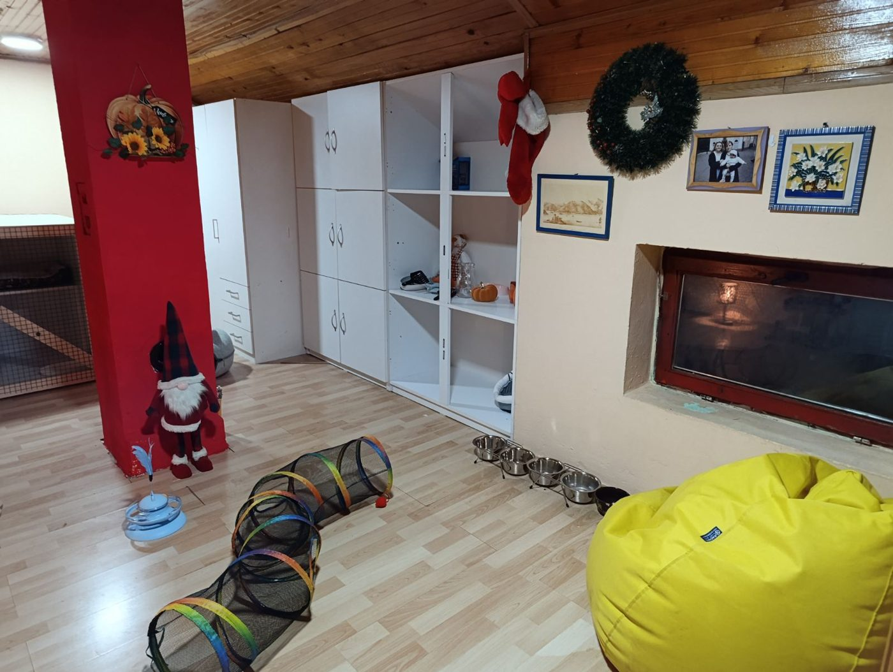
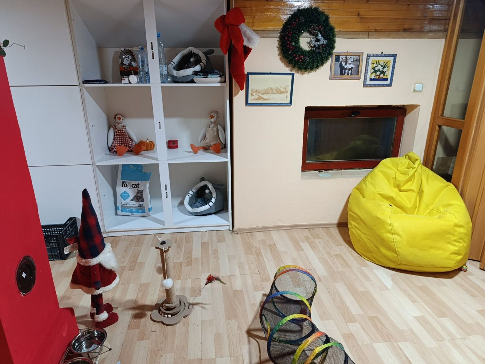
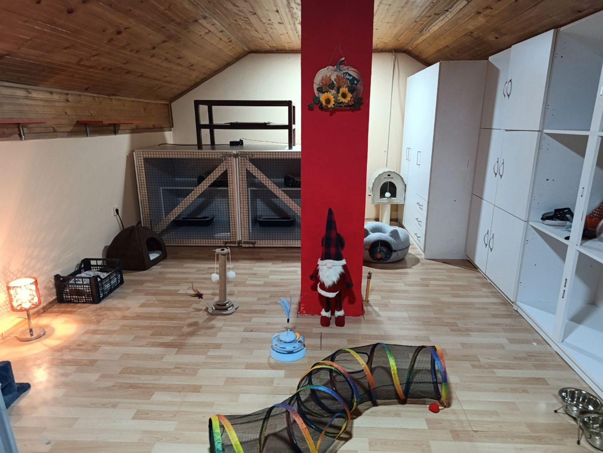
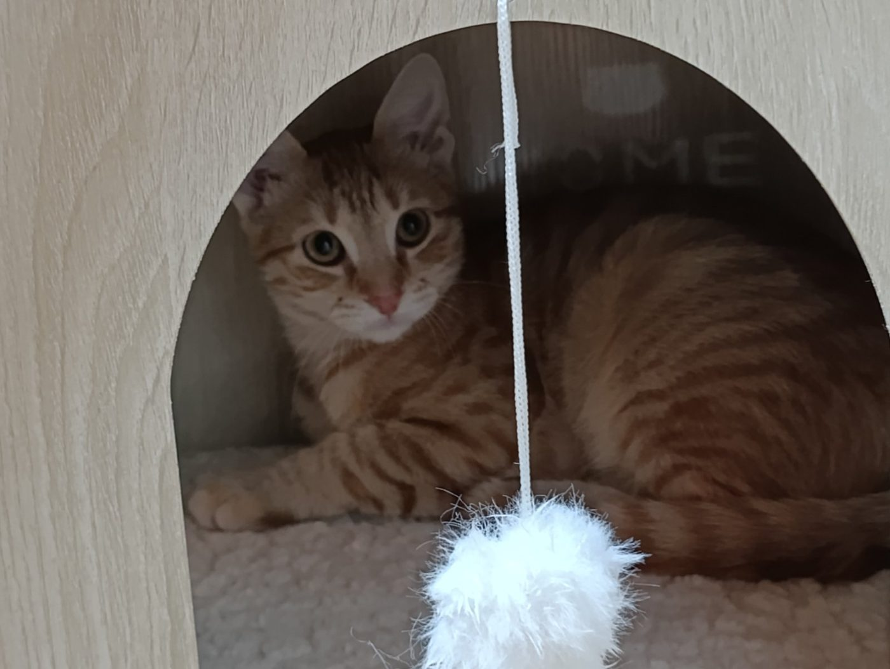
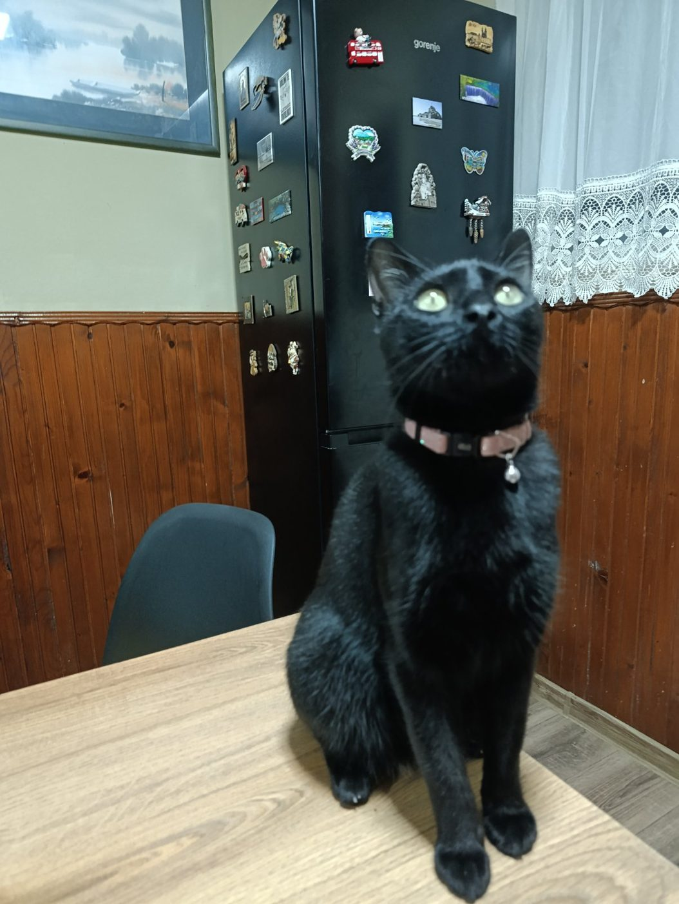
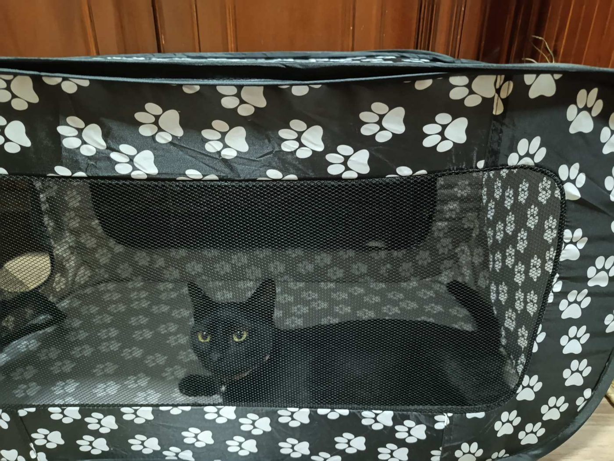
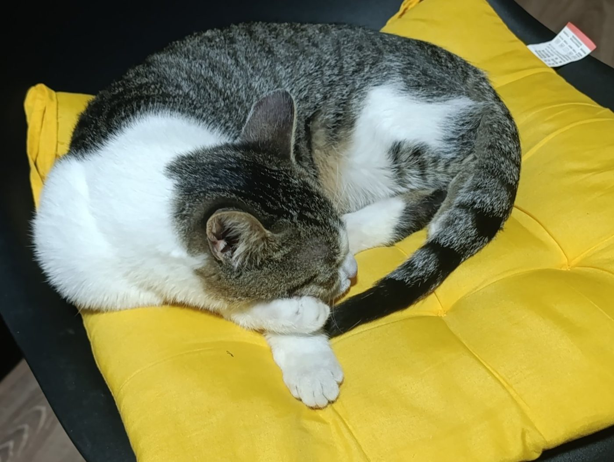

Prijatan i siguran ambijent za vašeg ljubimca. Dok ste na odmoru ili poslovnom putu, vaša maca ima svoj kutak, igračke, grebalice i puno maženja. Dovoljno je da ponesete hranu i dobru volju — sve ostalo je naša briga.
Topla potkrovna soba puna tunela, grebalica, kućica i mekanih kutaka.







Mačke ne vole promene. Zato kod nas sve liči na kuću.
Kućice i mekane ležaljke gde maca može mirno da se sakrije i odmori.
Penjalice, perca i loptice — da dan prođe u igri, a ne u čekanju.
Poštujemo ćud svake mace — i one stidljive i one koje traže krilo.
Uredan prostor, sveža voda i ishrana po vašem dogovoru.
Broj mesta je ograničen.